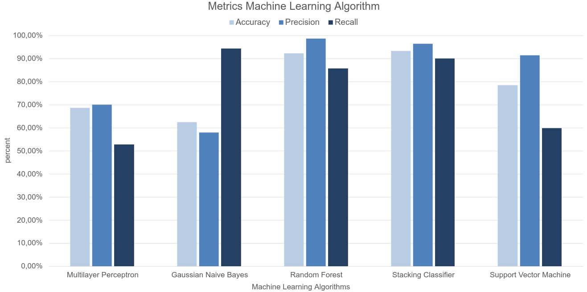

The Machine Learning Sensor Application
The Machine Learning Sensor application is a tool designed to detect DDoS attacks. The aim of the tool is that it can be integrated into any network infrastructure as long as it can be accessed by a firewall or security system. The tool was designed to have a simplified interface with the ability to modify its infrastructure according to the user's needs. The initial project was designed to be used on an SDN (Software Defined Networks) model, which was demonstrated in the "Demonstration" Section. However, the project is easily adaptable to other models, allowing it to be integrated with other firewalls, IDS security systems, or even local firewalls that have input and output interfaces.
The functionality of the application is represented by the image below. The diagram demonstrates the flow of the application from its initialization (Init Process and Select model), the permission request to the security server (Request Server Permission), loading the pre-trained models and entering the test flow cycle. When an attack is detected, the security server is notified.
The models have different characteristics depending on the metrics they have. The system administrator has the possibility to choose which algorithm meets his needs. For example, if it needs fast algorithms, it does not depend on false positives. The Stacking Classifier ensemble algorithm showed higher detection speed than the Randon Forest algorithm according to the Response Time Machine Learning Algorithms chart. However, in the metrics presented in the Machine Learning Metrics chart, the Random Forest models have greater precision (Precision metric). Another example, the Randon Forest model obtained the best results in the Precision metric, but the Gaussian Naive Bayes model obtained the best result in the Recall metric. In this example, the model has the characteristic of reducing false negatives.
